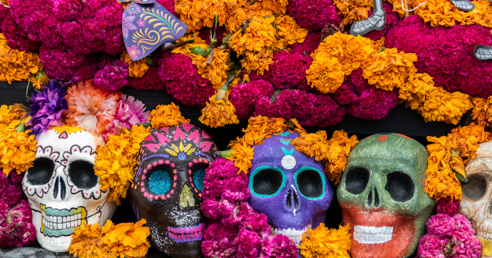

DÍA DE MUERTOS TRADICIÓN MEXICANA QUE TRASCIENTE EN EL TIEMPO
En la época prehispánica el culto a la muerte era uno de los elementos básicos de la cultura, cuando alguien moría era enterrado envuelto en un petate y sus familiares organizaban una fiesta con el fin de guiarlo en su recorrido al Mictlán. De igual forma le colocaban comida que le agradaba en vida, con la creencia de que podría llegar a sentir hambre. El Día de Muertos en la visión indígena implica el retorno transitorio de las ánimas de los difuntos, quienes regresan a casa, al mundo de los vivos, para convivir con los familiares y para nutrirse de la esencia del alimento que se les ofrece en los altares puestos en su honor. En esta celebración de Día de Muertos, la muerte no representa una ausencia sino a una presencia viva; la muerte es un símbolo de la vida que se materializa en el altar ofrecido. En este sentido se trata de una celebración que conlleva una gran trascendencia popular ya que comprende diversos significados, desde filosóficos hasta materiales. Su origen se ubica en la armonía entre la celebración de los rituales religiosos católicos traídos por los españoles y la conmemoración del día de muertos que los indígenas realizaban desde los tiempos prehispánicos; los antiguos mexicas, mixtecas, texcocanos, zapotecas, tlaxcaltecas, totonacas y otros pueblos originarios de nuestro país, trasladaron la veneración de sus muertos al calendario cristiano, la cual coincidía con el final del ciclo agrícola del maíz, principal cultivo alimentario del país. La celebración del Día de Muertos se lleva a cabo los días 1 y 2 de noviembre ya que esta se divide en categorías: De acuerdo con el calendario católico, el 1 de noviembre corresponde a Todos los Santos, día dedicado a los “muertos chiquitos” o niños, y el día 2 de noviembre a los Fieles Difuntos, es decir, a los adultos